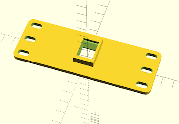
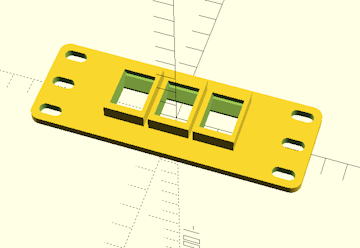
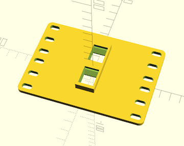
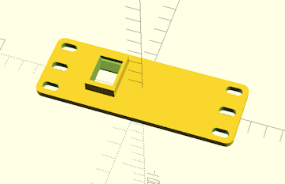
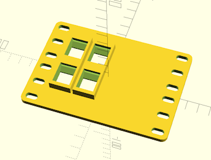
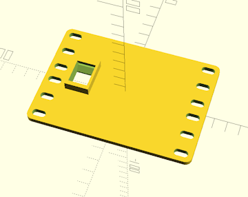
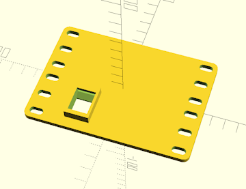

Home
Home

Configuration Options :: Additional Faceplate Modifications
Faceplates can be modified to add things like Keystone receptacles, cooling fans, and pushbuttons.

Modifications have a reservation area surrounding them that CageMaker PRCG uses to ensure things don't overlap or intrude into each other or structural areas such as the sides of a cage, as well as acting as a border or perimeter around ventilation grids. These areas are shaded in orange during previews.
centered mod type
Select a port, connector, or mounting point to add to the center of a cageless faceplate. Configurable grids of the same modification can be created.
For the current list of supported modifications, please consult Supported Modifications.
CageMaker PRCG will enforce space restrictions as needed - if a single modification, or a grid of modifications, is too wide and/or tall to fit, an error message will appear.

The mod selected here will be centered both horizontally and vertically on the faceplate. When using a VESA mount mod with the intention of supporting any significant amount of weight (e.g., wall-mounting a mini-rack via VESA wallmount), it may be advisable to thicken the faceplate by increasing the surface thickness setting and/or enable the reinforce faceplate option.
This option is only enabled if EITHER generating a cageless faceplate created by setting the faceplate only option to a fixed height OR enabling the closed faceplate setting to remove the device opening.
IEC-C13/C14/C19/C20 cutouts are sized to fit most commonly available C-series mains inlets/outlets, but some manual resizing may be required. By default, the cutout sizes are: 32.5x25mm for screw-mount C13/C14, 33x26mm for snap-in C13/C14, 33x25mm for screw-mount C19/C20, and 37.5x29.5mm for snap=in C19/C20.

centered mod grid columns
Creates a grid of the selected mod - this setting determines the number of copies of the mod per column, or, how many copies across.
CageMaker PRCG will enforce space restrictions as needed - if a single modification, or a grid of modifications, is too wide and/or tall to fit, an error message will appear.
This option is only enabled if EITHER generating a cageless faceplate created by setting the faceplate only option to a fixed height OR enabling the closed faceplate setting to remove the device opening.

centered mod grid rows
Creates a grid of the selected mod - this setting determines the number of rows of the mod, or, how many copies down.
CageMaker PRCG will enforce space restrictions as needed - if a single modification, or a grid of modifications, is too wide and/or tall to fit, an error message will appear.
This option is only enabled if EITHER generating a cageless faceplate created by setting the faceplate only option to a fixed height OR enabling the closed faceplate setting to remove the device opening.

left side mod type
Select a port, connector, or mounting point to add to the cage. Configurable grids of the same modification can be created.
For the current list of supported modifications, please consult Supported Modifications.
CageMaker PRCG will enforce space restrictions as needed - if a single modification, or a grid of modifications, is too wide and/or tall to fit, an error message will appear.
The right-side mod's settings are similar to the left-side mod's.

left side mod grid columns
left side mod grid rows
Creates a grid of the selected mod - these settings determine the number of copies of the mod per column or row.
CageMaker supports grids of the same modification repeated up to twelve wide by four tall.
CageMaker PRCG will enforce space restrictions as needed - if a single modification, or a grid of modifications, is too wide and/or tall to fit, an error message will appear.
The right-side mod's settings are similar to the left-side mod's.

left side mod horizontal offset
Sets the horizontal position for the port, connector, or mounting point, relative to the horizontal center of the faceplate. If this is left at zero, CageMaker PRCG will attempt to place it automatically to one side of the cage if there is sufficient room to do so.
Horizontal and vertical offset settings for modifications also apply to grids of modifications, in which case the center of the grid is the point about which the grid will be offset. If an offset will push one or more modifications in a grid off the edge of the faceplate or into an area reserved for mouinting space, CageMaker PRCG will display an error warning.
CageMaker PRCG will enforce space restrictions as needed - if a single modification, or a grid of modifications, is too wide and/or tall to fit, an error message will appear.
The right-side mod's settings are similar to the left-side mod's.

left side mod vertical offset
Sets the vertical position for the port, connector, or mounting point, relative to the vertical center of the faceplate.
Horizontal and vertical offset settings for modifications also apply to grids of modifications, in which case the center of the grid is the point about which the grid will be offset. If an offset will push one or more modifications in a grid off the edge of the faceplate or into an area reserved for mouinting space, CageMaker PRCG will display an error warning.
CageMaker PRCG will enforce space restrictions as needed - if a single modification, or a grid of modifications, is too wide and/or tall to fit, an error message will appear.
The right-side mod's settings are similar to the left-side mod's.

 Back To Top
Back To Top Navigate Site
Navigate Site Support This Project
Support This Project
 Community
Community
 Legal Notices & Information
Legal Notices & Information
 Copyright/Trademarks
Copyright/Trademarks